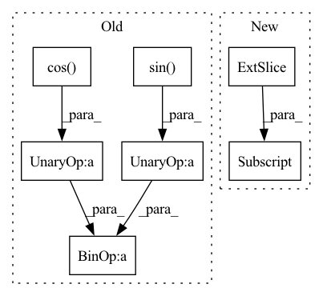

Pattern ID :10740
Before Change
if type(poses)==dict: poses = list(poses.values())
for p in poses:
center = (p.eye[0:2] - np.array((min_x, min_y)))*scale
end= center+15*scale* np.array((-np.cos(p.phi) , -np.sin(p.phi) ))
cv2.circle(img, (int(center[0]), int(center[1])), 6, (0,0,255), 4)
if draw_arrows:
cv2.arrowedLine(img, (int(center[0]), int(center[1])), (int(end[0]), int(end[1])), (0,0,255), 4)After Change
if pose_descriptions is not None:
for do in pose_descriptions[i_p]:
object3d = objects_dict[do.id]
end = np.int0(( 0.5*(np.max(object3d.points_w[:, 0:2] , axis=0) + np.min(object3d.points_w[:, 0:2], axis=0)) - np.array((min_x, min_y))) * scale)
cv2.arrowedLine(img, (center[0], center[1]), (end[0], end[1]), (255,255,255), thickness=2)
return img
In pattern: SUPERPATTERN
Frequency: 3
Non-data size: 7
Instances Fragment ID: 36996420
Project Name: mako443/text2pos-cvpr2022
Commit Name: 6d0e8e215c9a853543189a6d3f8f7a7239743626
Time: 2021-03-16
Author: manuel.kolmet@gmail.com
File Name: datapreparation/drawing.py
M Class Name: AnonimousClass
N Class Name: AnonimousClass
M Method Name: draw_objects_poses(4)
N Method Name: draw_objects_poses(3)
M Parent Class:
N Parent Class:
M File Name: datapreparation/drawing.py
N File Name: datapreparation/drawing.py
M Start Line: 29
M End Line: 35
N Start Line: 18
N End Line: 44
Before Change
// Explanation forthcoming
seq_len = t.shape[-2]
freqs = freqs[:, :, -seq_len:]
return (t * freqs.cos() ) + (rotate_half(t) * freqs.sin() )
After Change
-> TensorType["batch", "num_heads", "length", "dim"]:
num_features = frequencies.shape[-1] // The number of features we wish to rotate
x_rotate = x[..., :num_features] // Features to rotate
x_orig = x[..., num_features:] // Features to keep, as is
seq_len = x_rotate.shape[-2] // Length of the input Fragment ID: 36996416
Project Name: antofuller/configaformers
Commit Name: c3a00a8d424ad3ee1b05dd8cf0dc58b4c3e2252e
Time: 2021-09-10
Author: afuller187187@gmail.com
File Name: positional_and_masking_utils.py
M Class Name: AnonimousClass
N Class Name: AnonimousClass
M Method Name: apply_rotary_pos_emb(2)
N Method Name: apply_rotary_pos_emb(2)
M Parent Class:
N Parent Class:
M File Name: positional_and_masking_utils.py
N File Name: positional_and_masking_utils.py
M Start Line: 114
M End Line: 119
N Start Line: 123
N End Line: 136
Before Change
// \end{align}
//
// for $i \in {1, 2, ..., \frac{d}{2}}$
rx = (x * idx_theta2.cos() [:, None, None, :]) + (neg_half_x * idx_theta2.sin() [:, None, None, :])
//
return rxAfter Change
self._build_cache(x)
// Split the features, we can choose to apply rotary embeddings only to a partial set of features.
x_rope, x_pass = x[..., :self.d], x[..., self.d:]
// Calculate
// $[-x^{(\frac{d}{2} + 1)}, -x^{(\frac{d}{2} + 2)}, ..., -x^{(d)}, x^{(1)}, x^{(2)}, ..., x^{(\frac{d}{2})}]$
neg_half_x = self._neg_half(x_rope) Fragment ID: 36996428
Project Name: lab-ml/nn
Commit Name: 0ce65adf9e602321109528b05cf99fccb16cd2de
Time: 2022-06-03
Author: vpjayasiri@gmail.com
File Name: labml_nn/transformers/rope/__init__.py
M Class Name: RotaryPositionalEmbeddings
N Class Name: RotaryPositionalEmbeddings
M Method Name: forward(2)
N Method Name: forward(2)
M Parent Class: nn.Module
N Parent Class: nn.Module
M File Name: labml_nn/transformers/rope/__init__.py
N File Name: labml_nn/transformers/rope/__init__.py
M Start Line: 132
M End Line: 163
N Start Line: 171
N End Line: 193